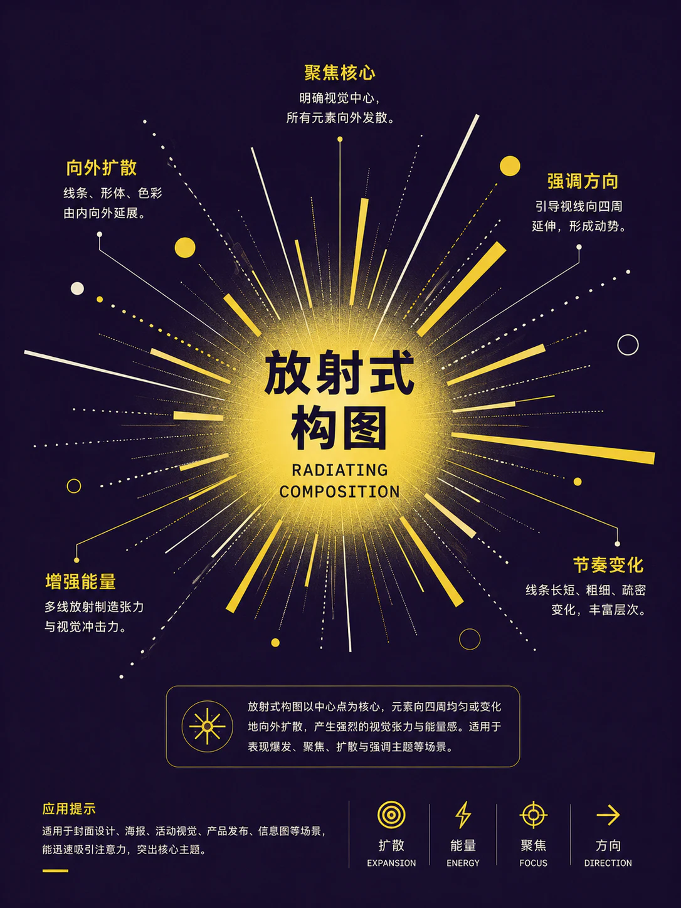

聚焦核心
刺字 36 束明确视觉中心，所有元素向外发散。
明确视觉中心，所有元素向外发散。
线条、形体、色彩由内向外延展。
画布横拖拉爆节奏与外扩 · 拖核心虚线环调留白 · 点击外圈单束手雕 · Space 激发脉冲
引导视线向四周延伸，形成动势。
多线放射制造张力与视觉冲击力。
线条长短、粗细、疏密变化，丰富层次。
当前核心光晕留白只有 5%，锐利亮黄射线直接劈过文字笔画。
在画布上向上拖开核心虚线环（或把「核心光晕」调到 22%–36%），为主标腾出一片发光呼吸核。
RADIATING VS. CENTRIPETAL, CENTRIFUGAL & CONCENTRIC
同属「几何形与放射结构」这一小类，四张紧挨着的海报名字只差一个字，视觉走向却截然相反。原海报这样界定 052：「放射式构图以中心点为核心，元素向四周均匀或变化地向外扩散，产生强烈的视觉张力与能量感。」切换下方四种矢量场，直接观察粒子流动方向与核心存在感。
BREAKING PATTERN GLARE WITH THREE-TIER MODULATION
新手画放射式构图，十有八九会拉出 30 根一模一样粗、一模一样长、角度死死均分的黄色实心条纹——结果看起来像廉价电风扇或促销爆炸贴。神经视觉学者 Arnold Wilkins 等人在 1984 年发表于《Brain》的研究指出，高对比度且周期高度均匀的密集条纹（空间频率接近约 3 周/度时尤甚）会诱发初级视皮层过度兴奋，让人产生发晃、刺眼甚至头痛的「纹眩不适」。逐个拨开下方的三层开关，看 052 原海报如何拆掉纹眩。
36 根完全等宽等长的高对比硬条，把空间频率死锁在单一周期上。
CENTRIC FORCES INSIDE A CARTESIAN FRAME
心理学家与艺术理论家 Rudolf Arnheim 在 1982 年出版的《中心的力量》（The Power of the Center）里指出，视觉构图永远活在两种空间秩序的拉扯里：向四面辐射的「中心系统」与横平竖直的「矩形画框笛卡尔网格」。放射式绝不必死锁在正中央——直接在下方 3:4 海报画框里任意点按，或切换五种机位，看核芯移动后最长射线如何替你劈出方向感与副文案安全口袋。
直接点击画框内任意位置重新埋设爆发源
偏心定向：核芯挪至 (34%, 38%) 后，射线朝右下角拉出最长能量尾迹，天然把画面分成「爆发源区」与「副文案落位区」。
The interaction between centric radiation and the rectangular boundary generates directional drama.
FIVE POSTER PRINCIPLES & REAL-WORLD X-RAY
把 052 原海报环绕在星爆四周的五句要点和底部的「应用提示」逐条拆开看，每一条都对应实际做图时要守住的一道闸门。
「明确视觉中心，所有元素向外发散。」
只立一个主角。无论放汉字标题还是核心产品，都要给它留出大约 22%–36% 直径（经验值）的干净发光核，绝不让射线割裂文字笔画。
「线条、形体、色彩由内向外延展。」
外放不只靠画直线：点阵微粒由密变疏、色块由暖金渐隐进深靛、卫星圆点向外抛撒，都能制造克制而高级的扩张感。
「引导视线向四周延伸，形成动势。」
所有辅助线反向延长必须精准交于同一源心；若想引导用户看某块副信息，就把最长最亮的一两束主光束指向那个角落。
「多线放射制造张力与视觉冲击力。」
多线不是堆满死堵。靠明暗高反差（如原海报深蓝紫底配太阳金束）叠加长短落差，20–32 束有呼吸的射线远比 60 根密线条更有冲击力。
「线条长短、粗细、疏密变化，丰富层次。」
用「粗实主束 + 细实长针 + 星尘点轨 + 暗空缝隙」四重词汇排演，把机械放射升级为有轻重缓急的视觉交响。
「适用于封面设计、海报、活动视觉、产品发布、信息图等场景，能迅速吸引注意力……」
原话抓住了它「一秒抓眼」的长处，但做信息图时须格外克制：放射骨架只适合「一个中心议题配 4–8 条分支」的总览图，一旦数据密集，射线反而会干扰比对。
活动海报：大标题落进暖金核心，粗束顺着演出日期与主舞台方位拉出动势，底部保留暗空给主办信息。
HISTORICAL LINEAGE & PERCEPTUAL SCIENCE
从哥特教堂的石棂花窗、未来主义笔下的电弧夜灯，到包豪斯基础课与神经视觉实验室，放射式构图历经八百年才演变成今天平面、漫画与发布会通用的爆发语法。
法国沙特尔圣母主教堂在 1194 年大火后重建、约 1260 年落成，其西立面与南北耳堂的巨型彩色玻璃玫瑰窗以中心圆核统摄十二瓣乃至二十四瓣石棂射线，让光线从圆心向四周有序绽放，奠定了西方视觉文化里「中心即神圣源头」的原型。
意大利未来主义画家 Giacomo Balla 的油画《街灯》（Lampada ad arco，现藏纽约现代艺术博物馆 MoMA，画上题年 1909、实作约 1910–1911）用密集辐射的明黄与暖白V形笔触在深蓝夜空中画出电弧灯压倒新月的光爆——配色与气势几乎是 052 原海报最直接的现代绘画先声。同期 Umberto Boccioni 的《城市兴起》（1910，MoMA 藏）也以爆发式力线塑造都市动能。
1924 年 Alexander Rodchenko 为列宁格勒国家出版社（Lengiz）设计的招贴《书籍！》，用从人声起点向外放射张开的几何楔形把标语变成视觉扩音器。1926 年 Vasily Kandinsky 在包豪斯出版《点线面》（Punkt und Linie zu Fläche，包豪斯丛书第 9 卷）并创作《几个圆》（古根海姆博物馆藏），系统分析了「黄色向外离心辐射」与「深蓝向内收敛」的色彩空间张力。
1982 年 Rudolf Arnheim 在《中心的力量》中阐明中心放射与矩形边界的动态博弈；1984 年 Arnold Wilkins 等人在《Brain》揭示周期性高对比条纹诱发视觉纹眩的神经机制，从生理层面佐证了放射线必须「粗细疏密有变」。与此同时，日本漫画体系将径向集中线（集中線）高度编码为定格爆发与心理冲击的通用视觉语言。
WHEN RADIATING COMPOSITION BACKFIRES
放射式构图天生像一记重鼓——第一秒震慑全场，但敲上五分钟耳朵就会发麻。遇到以下四种任务时请果断收起射线，点击每张卡片的翻改键对比克制替代方案。
阅读需要视线平稳地水平扫行；背景里的放射斜线不断把眼珠往中心拽，读两段就眼花。老实改用干净的单栏或网格排印。
放射式是「单核统治」，天然偏袒正中间那个元素。要公平对比三款型号或四个方案，请交给冷静的等权分栏或 056 四象限构图。
需要用户盯屏半小时以上的监控、病历或财务面板，高反差放射纹理会持续制造紧张感与视觉疲劳，留出大块平静低噪底色才是专业感。
即便场景本身确实适合爆发感，直接套用软件默认「等分太阳光芒」矢量素材也会瞬间掉价；至少拉开粗细极差、留出核晕与暗空隙再交稿。
SINGLE-VARIABLE VISUAL JUDGMENT QUIZ
四张「星穹 01」新品发布会主视觉配色、文案和主标字号完全一致，只改动了射线节奏与核心留白这两个关键变量。不看参数，凭刚才练出来的眼睛，选出唯一真正立得住的一版：
ORIGINAL POSTER & KEYWORDS ARCHIVE
